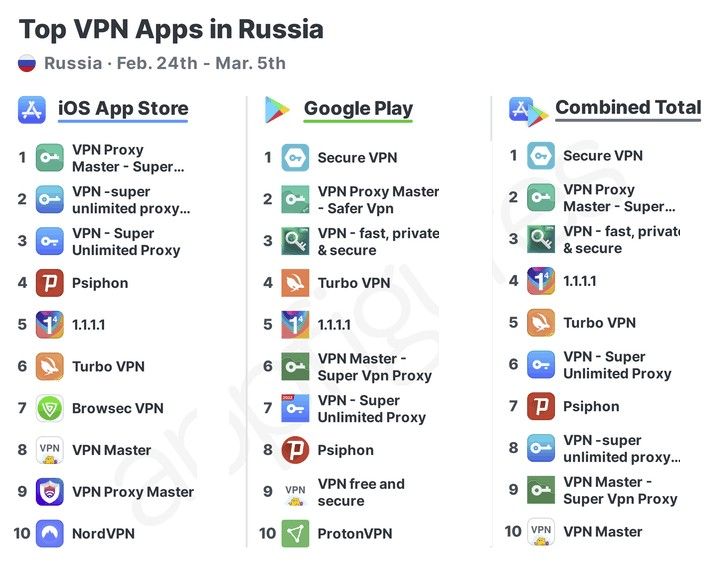

VPN что это?
На этом сайте:
История VPN;
Что такое VPN;
VPN в наши дни;
Мир IT технологий
Эта область в последнее время развивается очень активно, поэтому самые перспективные рабочие места и планы на карьеру связывают именно с информационными технологиями. Однако далеко не каждый понимает, что скрывает под собой этот термин.
Многие слышали о существовании IT-технологий. Что это такое, исчерпывающе могут ответить единицы. Конечно, молодежи сориентироваться в этом вопросе проще, но люди среднего и пожилого возраста, особенно далекие от мира техники, нередко с трудом вникают в суть термина. Словарные статьи гласят, что IT-технологии можно расшифровать, как информационные технологические процессы. Сокращение образовано в английском языке, где стало активно использоваться широкими массами. Именно из английского оно пришло к нам, поэтому не было никаких переводов, просто переняли устоявшуюся форму обозначения сферы
В настоящее время профессора, объясняя, что это такое – IT-технологии, рассказывают, что термином принято обозначать целый комплекс дисциплин, сфер человеческой деловой активности. Предполагается формирование, сохранение, контроль над данными, обработка информации.
Что такое VPN
Если кратко, то это — частное соединение через Интернет. Длинный ответ, ну — это долго. VPN расшифровывается как Virtual Private Network и это, возможно, самые важные три буквы для Вас и Вашей безопасности в Интернете. Главная цель виртуальной частной сети — позволить пользователям удаленно подключаться к частным сетям с помощью общедоступного соединения, а сопутствующие цели касаются всех многочисленных аспектов нашего присутствия в Интернете.
Современные VPN обеспечивают интернет-соединения, которые предотвращают воздействие вредоносных программ и взлом, обеспечивают конфиденциальность при передаче цифровых данных, дают доступ к регионально ограниченному контенту и маскируют физическое местоположение пользователя.Многие даже не подозревают, что и прежде, скорее всего, уже использовали VPN, а будущее у VPN не имеет границ и пределов.
Когда и как появился первый VPN
Во-первых VPN-технология создавалась в течение нескольких десятилетий. Вначале она предназначалась для решения задач безопасности правительственных учреждений, научных центров, крупных предприятий, которые владели важной информацией и не могли допустить возможности ее утраты или кражи при подключении к Интернету. С помощью VPN эти структуры получали безопасное Интернет-соединение, что давало возможность пользователям работать удаленно, получать информацию из главного офиса, находясь в дочерних офисах и филиалах, избегая опасности рассекречивания информации.
Самые ранние VPN сделали простую работу, дали возможность удаленного доступа к домашней сети, но открыли целый мир и хороших, и плохих возможностей. Первые версии VPN, имея благородные намерения обеспечить безопасность, сами часто были уязвимы для атак, которые блокировали или перехватывали поток данных. Они также были слишком медленными, чтобы передавать данные в режиме реального времени. Более поздние версии уже улучшили оригинальные идеи, продвинув технологии намного вперед. Сегодня современные виртуальные частные сети являются универсальным, удобным и необходимым инструментом для выполнения различных задач Интернет-пользователями.
VPN в наши дни
В наши дни очень важная вещь, даже для людей, которые мало связаны с IT сферой. В России за последние 2 недели произошли массовые блокировки новостных ресурсов, что сильно затруднило доступ граждан к альтернативным источникам информации. В результате резко вырос спрос на VPN решения, позволяющие обойти такие запреты и блокировки.
На данный момент VPN-приложения составляют большинство самых популярных приложений в России в App Store и Google Play .
НАШЛИ ОШИБКУ НА САЙТЕ ИЛИ ЕСТЬ СОВЕТЫ ПО ЕГО УЛУЧШЕНИЮ?
Тогда нажми на эту картинку и напиши в личные сообщения "Сайт"